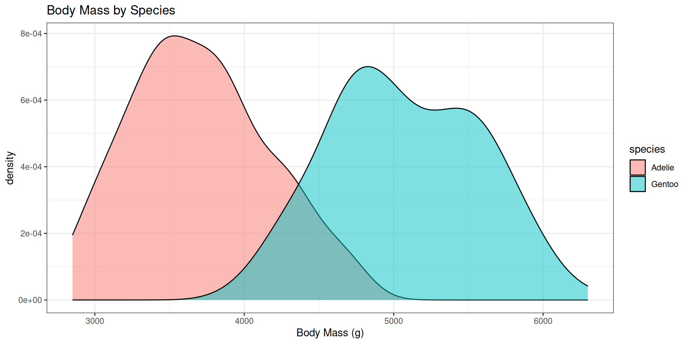
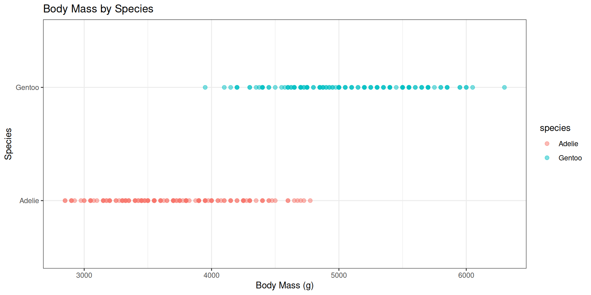
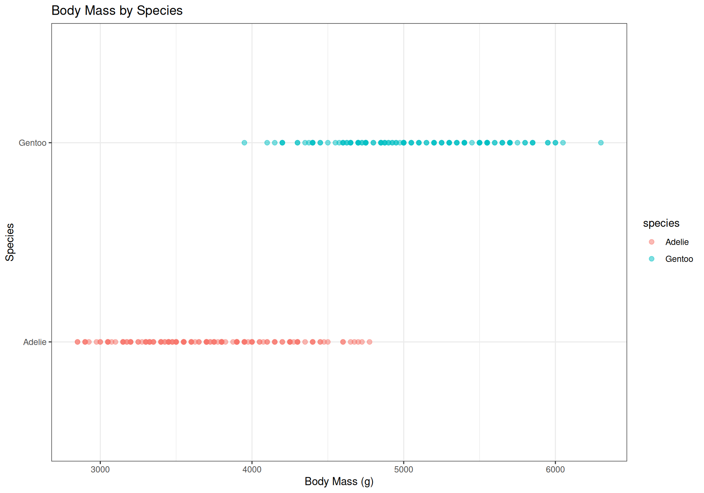
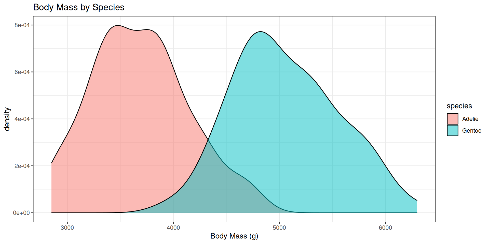
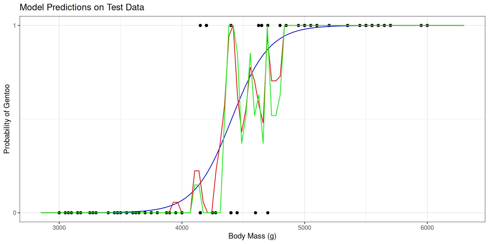

Classification
Machine Learning
Agenda
- Fundamentals of classification
- Classifiying penguins
- The classification problem
- Notation
- Two models
- Logistic Regression
- K-Nearest Neighbors
- Evaluating Models
- Classification in Tidymodels
Classification
Example: Palmer Penguins
# A tibble: 344 × 8
species island bill_length_mm bill_depth_mm flipper_length_mm body_mass_g
<fct> <fct> <dbl> <dbl> <int> <int>
1 Adelie Torgersen 39.1 18.7 181 3750
2 Adelie Torgersen 39.5 17.4 186 3800
3 Adelie Torgersen 40.3 18 195 3250
4 Adelie Torgersen NA NA NA NA
5 Adelie Torgersen 36.7 19.3 193 3450
6 Adelie Torgersen 39.3 20.6 190 3650
7 Adelie Torgersen 38.9 17.8 181 3625
8 Adelie Torgersen 39.2 19.6 195 4675
9 Adelie Torgersen 34.1 18.1 193 3475
10 Adelie Torgersen 42 20.2 190 4250
# ℹ 334 more rows
# ℹ 2 more variables: sex <fct>, year <int>Can we predict species from other measurements?
Palmer Penguins
# A tibble: 3 × 2
species n
<fct> <int>
1 Adelie 152
2 Chinstrap 68
3 Gentoo 124Palmer Penguins
# A tibble: 276 × 8
species island bill_length_mm bill_depth_mm flipper_length_mm body_mass_g
<fct> <fct> <dbl> <dbl> <int> <int>
1 Adelie Torgersen 39.1 18.7 181 3750
2 Adelie Torgersen 39.5 17.4 186 3800
3 Adelie Torgersen 40.3 18 195 3250
4 Adelie Torgersen NA NA NA NA
5 Adelie Torgersen 36.7 19.3 193 3450
6 Adelie Torgersen 39.3 20.6 190 3650
7 Adelie Torgersen 38.9 17.8 181 3625
8 Adelie Torgersen 39.2 19.6 195 4675
9 Adelie Torgersen 34.1 18.1 193 3475
10 Adelie Torgersen 42 20.2 190 4250
# ℹ 266 more rows
# ℹ 2 more variables: sex <fct>, year <int>How can I visualize the association between body mass and species?


The Classification Problem
- Goal: predict a categorical outcome (class) from one or more predictors (features).
- Examples:
- Predict species from body mass.
- Predict if email is spam or not from text features.
- Predict if a tumor is malignant or benign from imaging features.
- Types of classification:
- Binary classification: two classes (e.g., spam vs. not spam).
- Multiclass classification: more than two classes (e.g., species of penguins).
Notation (Binary Classification)
Two Models for Classification

Logistic Regression
- Model the probability of class membership using the logistic function.
\[ P(Y = 1) = \frac{1}{1 + e^{-(\beta_0 + \beta_1 X_1 + ... + \beta_p X_p)}} \]
- Estimate parameters using maximum likelihood estimation (see Stat 135 / 154)
- Predict class based on a threshold (e.g., If prob > 0.5 then 1).

K-Nearest Neighbors (KNN)
Non-parametric model that classifies based on the majority class of the k nearest neighbors in the feature space.
Steps:
- Choose the number of neighbors (k).
- For a new observation, find the k closest training points.
- Assign the class based on the majority class among those neighbors.
\[ \hat{Y} = \text{mode}(Y_{(1)}, Y_{(2)}, ..., Y_{(k)}) \]
Evaluating Models
- Common metrics for classification:
- Accuracy: proportion of correct predictions.
- Precision: proportion of positive identifications that were actually correct.
- Recall (Sensitivity): proportion of actual positives that were identified correctly.
- Specificity: proportion of actual negatives that were identified correctly.
Tidymodels
Overview of steps
- Train/test split (
rsample) - Preprocessing (
recipes) - Specify Models (
parsnip) - Workflows (
workflows) - Fit Models (
fit) - Make Predictions (
predict) - Evaluate Models (
yardstick)
1. Train/test split (rsample)
Goal: randomly assign 80% of rows to training and the rest to resting. Bin by species to ensure representation in both sets across range of y.
# A tibble: 192 × 8
species island bill_length_mm bill_depth_mm flipper_length_mm body_mass_g
<fct> <fct> <dbl> <dbl> <int> <int>
1 Adelie Torgersen 40.3 18 195 3250
2 Adelie Torgersen NA NA NA NA
3 Adelie Torgersen 36.7 19.3 193 3450
4 Adelie Torgersen 39.3 20.6 190 3650
5 Adelie Torgersen 39.2 19.6 195 4675
6 Adelie Torgersen 34.1 18.1 193 3475
7 Adelie Torgersen 42 20.2 190 4250
8 Adelie Torgersen 37.8 17.1 186 3300
9 Adelie Torgersen 41.1 17.6 182 3200
10 Adelie Torgersen 38.6 21.2 191 3800
# ℹ 182 more rows
# ℹ 2 more variables: sex <fct>, year <int>Visualize training data

2. Preprocessing (recipes)
Goal: define a recipe to clean / feature engineer the data for training / prediction.
3. Specify Models (parsnip)
Goal: define model specifications for a logistic model and two KNN models.
# logistic model
log_spec <-
logistic_reg() |>
set_mode("classification") |>
set_engine("glm")
# KNN classification (k=3)
knn3_spec <-
nearest_neighbor(neighbors = 3) |>
set_mode("classification") |>
set_engine("kknn")
# KNN classification (k=5)
knn5_spec <-
nearest_neighbor(neighbors = 5) |>
set_mode("classification") |>
set_engine("kknn")4. Workflows (workflows)
Goal: combine model specifications and preprocessing recipes into workflows for fitting.
5. Fit Models (fit)
Goal: fit all three models on the training set.
6. Make predictions into test
Goal: use trained models to make predictions on the test set.
ad_gen_preds <- ad_gen_test |>
mutate(
pred_log = predict(log_fit, new_data = ad_gen_test)$.pred_class,
pred_knn5 = predict(knn5_fit, new_data = ad_gen_test)$.pred_class,
pred_knn3 = predict(knn3_fit, new_data = ad_gen_test)$.pred_class
) |>
select(species, body_mass_g, pred_log, pred_knn5, pred_knn3)
ad_gen_preds# A tibble: 84 × 5
species body_mass_g pred_log pred_knn5 pred_knn3
<fct> <int> <fct> <fct> <fct>
1 Adelie 3750 Adelie Adelie Adelie
2 Adelie 3800 Adelie Adelie Adelie
3 Adelie 3625 Adelie Adelie Adelie
4 Adelie 3700 Adelie Adelie Adelie
5 Adelie 4400 Adelie Gentoo Gentoo
6 Adelie 3600 Adelie Adelie Adelie
7 Adelie 3250 Adelie Adelie Adelie
8 Adelie 4150 Adelie Adelie Adelie
9 Adelie 3150 Adelie Adelie Adelie
10 Adelie 3100 Adelie Adelie Adelie
# ℹ 74 more rows7. Evaluate Models
# new test data set with equally spaced x values (used to make smooth curves)
ad_gen_test_smooth <-
tibble(
body_mass_g = as.integer(seq(
min(ad_gen$body_mass_g, na.rm = TRUE),
max(ad_gen$body_mass_g, na.rm = TRUE),
length.out = 100
))
)
# get predicted probabilities for smooth test set
ad_gen_test_smooth <-
ad_gen_test_smooth |>
mutate(
# choose "Gentoo" as the 1 class (change if you prefer the other)
prob_log = predict(
log_fit,
new_data = ad_gen_test_smooth,
type = "prob"
)$.pred_Gentoo,
prob_knn3 = predict(
knn3_fit,
new_data = ad_gen_test_smooth,
type = "prob"
)$.pred_Gentoo,
prob_knn5 = predict(
knn5_fit,
new_data = ad_gen_test_smooth,
type = "prob"
)$.pred_Gentoo
)
# original test data with 0/1 outcome
ad_gen_test_num <-
ad_gen_test |>
mutate(
species_num = if_else(species == "Gentoo", 1, 0)
)
# plot original test data (0/1) with smooth probability curves overlaid
ggplot(ad_gen_test_num, aes(x = body_mass_g, y = species_num)) +
geom_point() +
geom_line(
data = arrange(ad_gen_test_smooth, body_mass_g),
aes(x = body_mass_g, y = prob_log),
color = "blue"
) +
geom_line(
data = arrange(ad_gen_test_smooth, body_mass_g),
aes(x = body_mass_g, y = prob_knn5),
color = "red"
) +
geom_line(
data = arrange(ad_gen_test_smooth, body_mass_g),
aes(x = body_mass_g, y = prob_knn3),
color = "green"
) +
scale_y_continuous(
name = "Probability of Gentoo",
limits = c(0, 1),
breaks = c(0, 1)
) +
labs(
title = "Model Predictions on Test Data",
x = "Body Mass (g)"
) +
theme_bw()
7. Evaluate Models (yardstick)
Goal: evaluate all models on the test set using accuracy and ROC AUC.
# A tibble: 4 × 4
.metric .estimator .estimate model
<chr> <chr> <dbl> <chr>
1 accuracy binary 0.881 log
2 recall binary 0.913 log
3 precision binary 0.875 log
4 specificity binary 0.842 log 7. Evaluate Models (yardstick)
Goal: evaluate all models on the test set using accuracy and ROC AUC.
knn3_metrics <- ad_gen_metrics(
data = ad_gen_preds,
truth = species,
estimate = pred_knn3) |>
mutate(model = "knn3")
knn5_metrics <- ad_gen_metrics(
data = ad_gen_preds,
truth = species,
estimate = pred_knn5) |>
mutate(model = "knn5")
all_metrics <- bind_rows(log_metrics, knn3_metrics, knn5_metrics) |>
pivot_wider(names_from = .metric, values_from = .estimate)7. Evaluate Models (yardstick)
# A tibble: 3 × 6
.estimator model accuracy recall precision specificity
<chr> <chr> <dbl> <dbl> <dbl> <dbl>
1 binary log 0.881 0.913 0.875 0.842
2 binary knn5 0.833 0.848 0.848 0.816
3 binary knn3 0.821 0.848 0.830 0.789